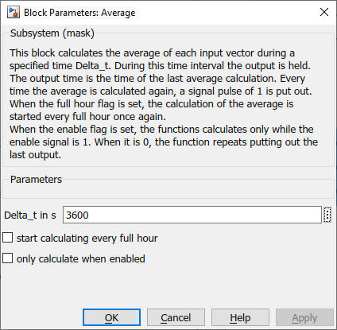

Average
Path: CARNOT/Toolbox
Purpose:
The block calculates the average of each input vector during a specified
time interval.
Description:
For a time interval the function saves the input values and calculates at
the end of the time interval the average. This average and the actual time
is then put out, until the next average calculation. Whenever calculating
the average, an output signal is set from 0 to 1. With the enabling signal
input, you can control, when the average is calculated. It’s also possible
to set the time interval that way, that a new time interval is started
every full hour. The block has no internal clock, so the user can connect
simulation or system time to the time input.
Input:
| input | : | input data vector |
| time | : | simulation time or system time (for real time calculations) in s |
| enable | : | enable signal to start the calculation (0 / 1) |
Output:
| average | : | calculated averages |
| output time | : | time of average calculation in s |
| pulse | : | pulse is active (= 1) when timestep of avererage calculation is reached (oherwise pulse = 0) |
Parameters and Dialog Box:

Examples:
Open the example explorer from the Matlab command window
ExampleBrowser
or load the examples via the CARNOT library.
Characteristics:
| Direct Feedthrough | : | Yes |
| Sample Time | : | Inherited from driving block |
| Vectorized | : | Yes |